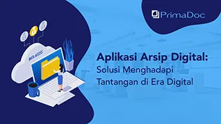

Aplikasi Arsip Digital: Solusi Menghadapi Tantangan di Era Digital
Dalam menghadapi tantangan di era modern, keberadaaan solusi berbasis teknologi seperti aplikasi arsip digital merupakan keuntungan besar bagi perusahaan Anda. Apalagi mengingat kebutuhan organisasi yang terus berkembang dari waktu ke waktu, ...
Read More »